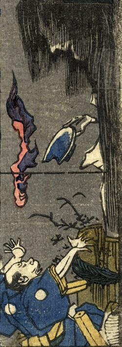

井戸から現れた幽霊。欠けた皿を持っている。傍らには火の玉が浮いている。
著作者：貞秀／出典：親書誌：U426_nichibunken_0227：新板化物づくし；シンパンバケモノヅクシ／日付：2010／資源識別子：U426_nichibunken_0227_0013_0000
Copyright (c)2010- International Research Center for Japanese Studies, Kyoto, Japan. All rights reserved.